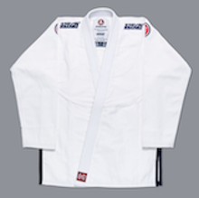
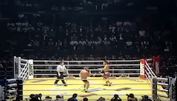

Coach Nate demonstrates an Achilles lock from guard.
He starts by securing his opponent's hips to the ground for a Knee-n-butt guard break notice how he sits back and hunkers down on the leg and moves into Ashi Garami.
From there he has a bunch of attacks available, but Coach demonstrates an Achilles lock
Continue to ...

Image courtesy of scramblestuff.us
Kimomo comparison
Gear Reviews | March 6th 2019
Over the past seven years, I've purchased a lot of gear.
I've decided to give a brief comparison of some of the Gi's I have.
Continue to ...
Image courtesy of Saenchai Muay Thai
This weeks Featured Athlete
Featured Athletes | March 6th 2019
Pound-for-pound best in Muay Thai history, Saenchai is practically 100-1 against foreign opponents.
He has fought some of the best competitors and has come out on top.
Saenchai's been winning fights for the past 30 years.
Continue to ...

Image courtesy Legendary Striking
Fight Breakdown
Technique | March 6th 2019
Genki Sudo was one of the weirdest MMA fighters, especially on his feet.
Look up Manon Gibson, now imagine him drunk that's Genki Sudo.
On the ground, however, was dangerous.
Perhaps the greatest western Muay Thai fighter of all time is Ramon Dekker.
In his prime, Ramon Dekker would go into Thailand and fight the best Thai fighters of the golden era.
He came out of retirement to challenge Genki Sudo for a truly awkward match.
Continue to ...